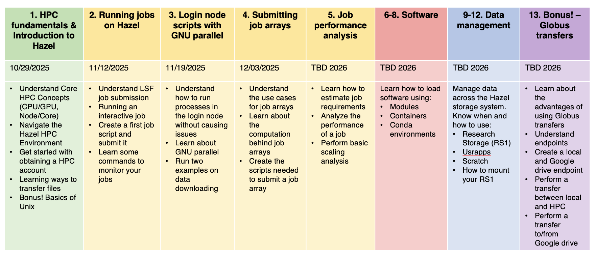

BRC Hazel Training Materials
This repository contains training materials in Quarto markdown format (.qmd files) to learn how to use Hazel HPC for bioinformatics.
These materials were developed by the Hurwitz Lab at North Carolina State University as part of the Bioinformatics Resource Center (BRC) training program. They accompanied live workshop sessions but can also be used for self-paced learning.
The workshop presentations can be found int he slides/ directory, while hands-on exercises and tutorials are in the notebooks/ directory.
This is table depicting the calendar of live training sessions associated with these materials. We recommend you follow along with the exercises in the order presented here:

🚀 Getting Started
- Clone or download this repository
- Choose your preferred viewing method from the options above
- Open the training materials and follow along with the exercises
👀 Viewing the Training Materials
There are several ways to view and interact with the training materials:
Option 1: View Pre-rendered HTML Files (Easiest)
- Download the HTML files from the repository
- Open them directly in your web browser
- No additional software required
Option 2: Use VS Code with Quarto Extension (Recommended for Editing)
If you want to edit or preview the materials while working on them:
- Install VS Code
- Install the Quarto extension for VS Code
- Open the
.qmdfiles in VS Code - Use the preview pane to see rendered output alongside your code
- Press
Ctrl+Shift+K(orCmd+Shift+Kon Mac) to render the document
Option 3: Render with Quarto CLI
To render the Quarto documents yourself:
Install Quarto
Clone this repository:
git clone https://github.com/hurwitzlab/brc_hazel_training.git cd brc_hazel_trainingRender individual documents:
quarto render document.qmdOr render all documents:
quarto renderOpen the generated HTML files in your browser
Option 4: Use RStudio
If you’re familiar with RStudio:
- Install RStudio (version 2022.07 or later includes Quarto)
- Open the
.qmdfiles in RStudio - Click the “Render” button to preview documents
Option 5: View raw files on GitHub
You can view the raw Quarto markdown files directly on GitHub, though formatting and code output won’t be rendered.
🤝 Contributing
If you find issues or have suggestions for improvements, please open an issue or submit a pull request.
📧 Contact
For questions about the training materials, please contact the Hurwitz Lab (mtouced@ncsu.edu or blhurwit@ncsu.edu)